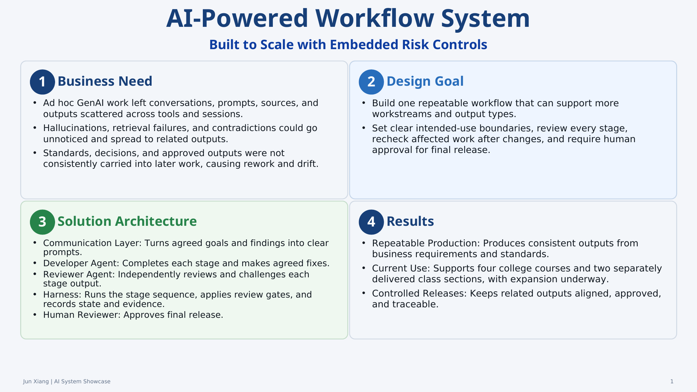

1. Introduction
- The AI system I developed was originally conceived for AI-assisted modeling in regulated banking, with business needs and Model Risk Management controls built into the design. It is currently used for live college course delivery.
- It scales production through shared standards, skills, templates, and staged execution while preserving use-case-specific inputs and criteria.
- It embeds separate-context review, impact-based revalidation, human approval, and release traceability.
2. System Overview

4. Course Production Demo
Employers need new managers who can set clear goals, solve team problems, make sound decisions, and turn plans into action. DBM201 teaches students practical tools for these tasks. The short excerpt below shows a learner-facing video produced and reviewed through the controlled workflow.